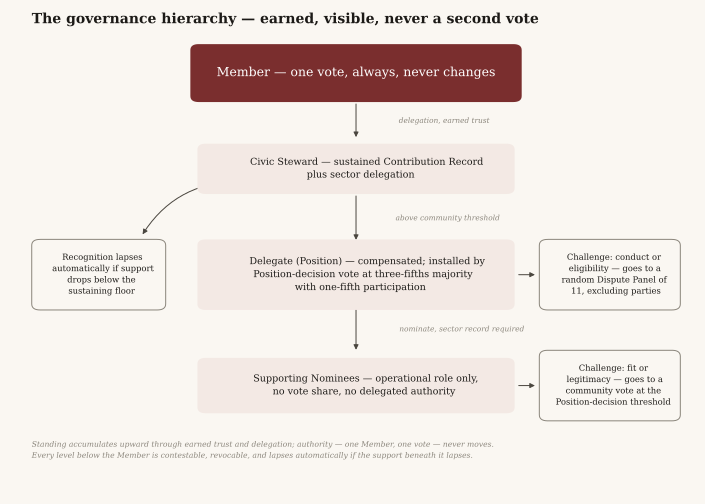
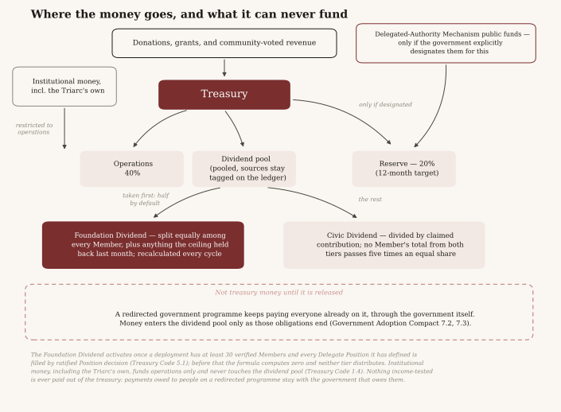
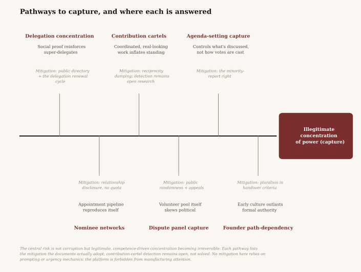
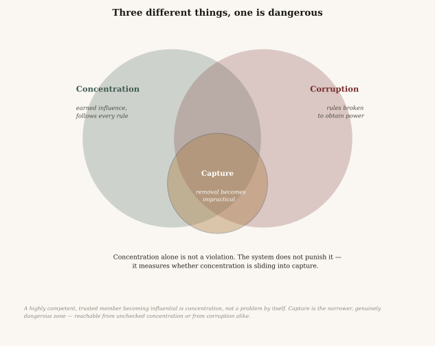
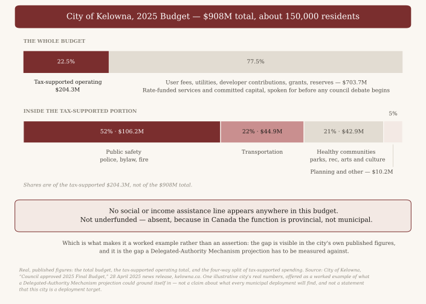

The Member Bill of Rights
Proposed under the Founding Charter. If ratified, these rights bind the Triarc itself — its panels, its moderators, its stewards, its founder, and its majorities. The charter entrenches this document, in full, from the moment it is ratified: it then amends only at the entrenched threshold of Article VIII — a three-quarters majority with minimum participation of 40%.
Every governance system eventually faces a majority that wants to silence, punish, or exclude an unpopular member. Rights written in that moment protect no one. These are written before that moment, precisely so they will hold during it. They are not granted by the Triarc; they are the conditions under which the Triarc is entitled to govern at all.
IVoice. Every Member may advocate any position, dissent from any decision, and criticise the Triarc itself — its rules, its stewards, its founder, its direction — without penalty of any kind. No sanction may ever attach to the content of a Member's positions.
IIVote. Every Member holds one vote on every binding decision. No right, sanction, standing, contribution level, or period of inactivity may condition, dilute, or suspend that vote. Only membership revocation itself, under the due process of Right IV, may end it.
IIIDelegation. Every Member may grant, withhold, revoke, or renew delegation freely, and may not be coerced, paid, or threatened into any delegation choice. Retaliation against a Member for how they voted or delegated violates this document.
IVDue process. No Member may be sanctioned except by a Dispute Panel under Article VI of the charter, after notice of what is alleged, an opportunity to respond on the record, and a reasoned public decision. No moderator, steward, or founder may impose punishment summarily. Emergency interim measures must be time-limited and reviewed by a panel.
VProportion. Sanctions must be graduated: the mildest measure adequate to the harm. Warnings before suspensions, suspensions before revocation, and revocation only for the gravest or persistently repeated violations.
VIIdentity. No Member is required to disclose their legal identity to participate, and the Triarc will never publish it. Exposing a Member's outside identity against their will is among the gravest violations this community recognises. Verification may check government identification or financial records to confirm a Member is a real, unique person, and may never establish or reveal more than that pass/fail fact — not to the public, not to other Members, not to the Triarc's own governance.
VIIExit. Every Member may leave at any time, without penalty, without process, and without forfeiting anything already distributed. Their record remains in the public history exactly as it stood.
VIIIPetition. Every Member may submit any proposal. The agenda may be scheduled by neutral procedure and never gatekept by content: no rule may allow any person or body to stop a proposal reaching deliberation because of what it argues.
IXEquality. These rights belong identically to every Member — newest and oldest, most active and least, whatever they possess or lack outside the Triarc. Standing earns influence. It never earns extra rights, and nothing earns fewer.
XThe Record. Every Member has the right to the complete public record — every decision, vote, delegation, sanction, and dollar — and the right to have their dissent recorded permanently alongside any decision they opposed.
The Code of Conduct
Proposed under the Founding Charter. Gives content to clause 1.4 — what "conduct that materially damages the community" means — and binds sanctions to the graduated process the Member Bill of Rights requires. If ratified, amendable by ordinary proposal.
1. What the Triarc expects
1.1Argue in good faith. Attack positions, never people.
1.2Distinguish what you know from what you believe. Cite what can be cited. Say "I think" when you think.
1.3Represent your contributions truthfully.
1.4One person, one account, one voice.
2. Violations
The following materially damage the community, in ascending order of gravity:
2.1Bad-faith disruption — sustained derailing of deliberation, flooding, or persistent personal attacks after warning.
2.2Contribution fraud — claiming work not done, inflating work done, or colluding in attestation rings to farm the Contribution Record.
2.3Vote and delegation interference — buying, selling, coercing, or threatening any Member's vote or delegation, or retaliating for either.
2.4Sybil violation — operating or knowingly assisting multiple member accounts.
2.5Infrastructure sabotage — deliberate damage to the platform, records, or treasury mechanisms.
2.6Exposure — publishing a Member's outside identity against their will, or credibly threatening to.
Criticism of the Triarc, advocacy of any position, and unpopular argument appear nowhere on this list and never will. Right I of the Bill of Rights is not subject to this code.
3. Graduated sanctions
Sanctions are graduated, proportionate, and cheap to administer. In ascending order — and panels must begin at the lowest step adequate to the harm:
3.1Public notice — a panel finding entered in the record, with no further consequence.
3.2Accrual suspension — contribution accrual paused for a defined period (default: 30 days). Participation, voting, and voice continue unimpaired.
3.3Participation suspension — posting and proposal rights paused for a defined period (default: 30 days, maximum 90). The Member's vote is unaffected: under Right II, only revocation itself touches the vote.
3.4Contribution voidance — for fraud under 2.2, the fraudulent entries are voided, and dividends paid on them are owed back to the treasury before accrual resumes.
3.5Revocation — membership ends. Reserved for violations 2.4 through 2.6, or persistent repetition of lesser violations after sanctions at every lower step. Only a Dispute Panel may revoke. The decision stands unless the community overturns it under charter 6.3, and Dispute Procedure Code 6.2 holds the revocation for 14 days so that proposal can be filed.
4. Process
4.1Any Member may report a violation. Reports go to a Dispute Panel under Article VI of the charter: eleven randomly selected volunteers, parties and their delegation relationships excluded, deciding on the record within the defined window.
4.2The accused Member receives the specifics of the allegation and responds on the record before any decision. Right IV admits no exceptions.
4.3Moderators are Members recognised to a moderation Position under Contribution Code 8, installed and removed by Position decision exactly as any other Delegate Position. During the founding period the founder may appoint interim moderators instead (Charter 9.2); that power lapses with Phase I, and from Phase II onward the role exists only by community vote. A moderator may take emergency interim measures — removing doxxed content, freezing a suspected sybil account — lasting no more than 72 hours, after which a panel must review or the measure lapses automatically. Moderation carries no authority over any proposal, vote, or delegation.
4.4Every finding, sanction, and reasoning enters the permanent public record. Sanctions expire; the record does not.
4.5Schedule of defaults. Both defaults in this code are chosen rather than derived. Thirty days of accrual suspension (3.2) is one full contribution period, so a sanction costs a cycle rather than an arbitrary fraction of one. Participation suspension (3.3) carries the same thirty-day default with a ninety-day maximum, the ceiling set so that no sanction short of the Dispute Procedure's own remedies can remove someone from community life for a season. Neither default touches the vote, which is not suspendable under any provision of these documents.
5. The spirit clause
No code anticipates everything. A panel confronting conduct this code did not foresee should ask one question: does this conduct damage the community's capacity to govern itself honestly? — and answer it with the lightest hand the answer permits.
The Contribution Code
Proposed under the Founding Charter. Implements Article II — how contribution is logged, verified, weighted, and defended against gaming. Every number is a default, reviewable quarterly and amendable by ordinary proposal. This is machinery, not principle; the community should expect to revise it often and without ceremony.
1. The unit
1.1Contribution is measured in Contribution Marks, accrued per distribution period (default: monthly, matching the Civic Dividend cycle).
1.2Contribution Marks determine two things: a Member's share of the period's Civic Dividend, subject to the accrual cap of charter 5.3 and 4.3 below, and their civic standing.
1.3The Contribution Record is permanent, and standing is computed on a trailing 12-month window. Dividends already paid are never affected by the window.
1.4A logged and verified contribution (Section 3) does not accrue automatically. It enters the record in a pending state and must be claimed by the Member before it counts toward standing or any dividend distribution. Claiming is a single deliberate act — reviewing the pending entry and confirming it — available from the Member's own Contribution Record at any time.
1.5A Member has 60 days from verification to claim a pending contribution. The window is a default, adjustable by ordinary proposal.
1.6A contribution unclaimed when its window closes does not accrue, and the lapsed entry is not revived retroactively. The underlying work may be logged again as a new contribution if it remains current. The unclaimed entry is never deleted: it stays on the permanent record, marked unclaimed, exactly as verified.
1.7Claiming requires no re-verification and reopens no dispute window.
1.8Pending, unclaimed contributions are visible on a Member's own record at all times, with no countdown, reminder, or prompt attached.
2. Domains and sectors
Marks are earned, never issued against a quota: a Member accrues them by doing verified work, and the Civic share of the dividend pool — what remains after that cycle's Foundation Dividend share is set aside first under Treasury Code 5.4 — divides among the Marks actually claimed that period. Each domain carries a weight on what a Mark earned in it is worth when that division happens. Founding defaults:
| Domain | Share | What accrues |
|---|---|---|
| Deliberation | 30% | Arguments, evidence, and critique in proposals that other Members attest moved the decision. Dissent that sharpened a proposal counts equally with support that carried it. |
| Craft | 30% | Research, writing, code, design, translation, documentation — logged with a link to the work. |
| Stewardship | 25% | Moderation, onboarding, facilitation, infrastructure maintenance — logged against the duty performed. In-person service to the community, logged against the recognised host that confirms it (3.5). |
| Attestation | 15% | Making careful, attributed attestations of others' contributions. Recognising work is itself work. |
2.1Domain shares rebalance quarterly by ordinary proposal. The shares govern what a Mark is worth, never how many may exist.
2.2A contribution may also carry a sector tag, a topical category distinct from domain. Domain measures what kind of work it is; sector measures what it is about. Sector-tagged Marks, not domain Marks, determine sector-scoped standing under Charter Article IV. The sector list is community-maintained and amendable by ordinary proposal.
2.3Founding sector defaults depend on what a deployment governs. A deployment governing a municipality starts from civic sectors, drawn from what a city's budget actually covers: Public Safety; Transportation; Parks, Recreation & Culture; Housing, Planning & Development; Utilities & Environment; and Community Platform, the work of running the deployment itself. An organisation governing only its own operations starts from organisational sectors: Infrastructure & Technology, Policy & Governance, Outreach & Membership, Finance & Treasury, Dispute & Conduct, Culture & Communications. Either list is a starting point the community amends under 2.2, and a deployment should drop any sector its government does not actually control. A contribution may carry zero, one, or more than one sector tag. An untagged contribution accrues normally and carries no sector-scoped standing.
2.4A Member may publicly declare which sectors they follow — a self-declared statement of interest, distinct from sector-scoped standing, which is earned. Following costs nothing, grants no Marks or standing, and is visible on the Member's profile. Declared interest and sector-tagged Contribution Record together feed the ranking Rules of Procedure 4.4 describes; nothing else does.
3. Verification
3.1Contributions are self-logged with evidence: a link, a diff, an artifact, a thread. Unlogged work, however real, does not accrue.
3.2Platform-native actions — votes cast, proposals completed, panels served — verify automatically.
3.3Everything else, apart from in-person service (3.5), verifies by peer attestation: a claimed contribution accrues when attested by at least two Active Members who did not collaborate on it. Attestations are public, attributed, and permanent.
3.4An attestation is a stake of the attestor's own standing. When a panel voids a contribution as fraudulent, every attestation on it is voided too, and the attestors' Attestation-domain Marks for that period are forfeited. Honest error, promptly self-reported, is not penalised.
3.5In-person service. Unpaid work done in person for the community, through a public institution or not-for-profit organisation the community has recognised as a host by ordinary proposal, accrues as Stewardship. It verifies by the host's own confirmation of who served and for how long, and not by peer attestation: 3.3 does not apply to it. A Member who works for a host or sits on its board may not confirm their own service or a family member's. The list of recognised hosts is public, and recognition is withdrawn the same way it is granted. Work a Member is paid for, by the host or by anyone else, does not accrue.
3.5aIn-person service sits inside Stewardship rather than in a domain of its own for two reasons. The first is verification. Every other contribution leaves something a stranger can inspect, a link or a thread or a document. Physical work leaves nothing, so resting it on two Members vouching for each other would make it the cheapest contribution to invent. A host that already keeps its own record of who turned up is a witness with no share in the dividend. The second is that a domain must be one a community can earn in. Charter 9.2 does not close the founding phase until contributions have been verified in every domain, and a deployment with no premises and no hosts could never satisfy a domain made only of in-person work. A host can still be captured, by a Member who runs one confirming hours for friends. Public recognition, a public host list and the quarterly review of 6.1 are what stand against that, and they are weaker than an artifact. A deployment with partners on the ground may give service a domain of its own by amending charter 2.2; this clause is the default for one that has not.
4. Anti-gaming mechanics
4.1Diversity requirement. No more than 50% of a Member's Marks in any period may count toward that period's Civic Dividend from a single domain. Marks above the cap still count toward standing, and the underlying contribution is never refused at logging. The cap is measured on domains, never on sectors.
4.2Reciprocity damping. Attestations between the same pair of Members are progressively discounted within a period: full value, then half, then quarter.
4.3The accrual cap. No Member may receive more than five times an equal share of the new money a cycle commits to distribution, both treasury-funded tiers counted together and no other payment, per charter 5.3, regardless of Marks. The basis is the new money committed, not the sum that happens to go out, and not amounts carried forward. Whatever the cap withholds is not lost: it joins the next cycle's Foundation Dividend under Treasury Code 4.3. Marks above the cap still count toward standing.
4.4Novelty over repetition. Repeating a substantially identical contribution accrues at declining value.
4.5The exploit clause. When the community identifies a gaming pattern this code missed, the weighting fix applies prospectively by ordinary proposal. Retroactive voidance requires a Dispute Panel finding of fraud under the Code of Conduct.
5. What never accrues
Voting itself, which is a right rather than a paid act — no Mark may ever attach to how anyone votes or delegates; holding delegations, since trust is not labour; founding-period actions by the founder; and any act already sanctioned by a panel in the same period.
6. Review
6.1Each quarter the community reviews Mark distribution across domains and Members, concentration trends, attestation patterns, claim rates on pending contributions, and any accrual the community regards as unearned. The review is a standing agenda item, not an emergency measure.
6.2The question the review asks is the charter's own: not whether the Members with the most free time are accruing, but whether the Members with the least can.
7. Opportunities
7.1Any Member may post an opportunity — a described task or problem the community could use help with — tagged by sector and, where applicable, domain. Posting costs nothing and grants no Marks.
7.2Completing or contributing to an opportunity is logged and verified exactly like any other contribution (Section 3).
7.3The platform may surface opportunities to Members whose sector-tagged Contribution Record fits. Posting, claiming, and completing an opportunity all remain voluntary, and no Member may be assigned one.
8. Positions and Supporting Nominees
8.1A Position is a named, defined office within a sector — "Housing Delegate," for instance — filled when a Civic Steward becomes a Delegate for that sector under a ratified Position decision (Charter 4.3, Rules of Procedure 1.5). Every Position appears in the public, browsable Steward and Delegate directory (Charter 4.4).
8.2A Delegate holding a Position may nominate Supporting Nominees to assist in that Position's work.
8.3A nominee must already hold an earned Contribution Record in the Position's sector.
8.4A nomination confers a recognised title and operational role only, and never any share of the nominating Delegate's vote weight or delegated authority. A Supporting Nominee's governance power remains exactly what they have separately earned as a Member.
8.5Every nomination, and the nominee's own Contribution Record, is logged on the public, permanent record the moment the nomination is made.
8.6Any Member may challenge a specific nomination. A challenge alleging a conduct or eligibility problem — that this person should not hold any role — goes to a randomly selected Dispute Panel. A challenge alleging the nomination itself is illegitimate or a poor fit — that this appointment is wrong, independent of the nominee's conduct — goes to a community vote at the Position decision threshold (Rules of Procedure 1.3).
8.7A Supporting Nominee's role is tied to the nominating Delegate's tenure. If the Delegate's Position lapses under Founding Charter 4.9, or they are removed by ratified Position decision, every nominee's role lapses automatically with it. A successor Delegate may re-nominate the same individuals; nothing carries over automatically.
8.8A Supporting Nominee's public profile in the directory (Charter 4.4) discloses their delegation and attestation history with the nominating Delegate and with each other Supporting Nominee under the same Position. This is disclosure only: no appointment is blocked by it, and no diversity quota applies.
8.9Schedule of defaults. Every default in this code is chosen rather than derived. The monthly accrual period (1.1) matches the dividend cycle so that earning and paying run on the same clock. They do not run on the same window, and the difference is the sixty-day claim window of 1.5: a contribution verified in one period but claimed in the next accrues to the period it was claimed in, because Section 2 divides the pool among the Marks actually claimed that period. A Member can therefore hold a verified contribution back and claim it into a thinner period for a larger share. That is a real lever and this code does not currently close it; sixty days is kept because it is long enough to cover an absence and short enough that a period's ledger eventually closes, and the trade is stated rather than papered over. The domain weightings of Section 2 — 30/30/25/15 — say that argument and craft matter most and equally, that keeping the community running matters nearly as much, and that recognising others' work is real work worth a share of its own; they are the most openly contestable numbers here and 2.1 exists so they can be argued quarterly. Two attestations (3.3) is the smallest number that is not a single point of failure, chosen against three because three is unreachable in a small community and would make the ledger a record of who has friends. Two is not a defence against a ring: 4.2 damps repeat attestations between the same pair, so four or more Members can rotate attestations and meet 3.3 without any pair repeating inside a period. What stands against that is 3.4's forfeiture and the quarterly pattern review of 6.1, not the number two. The trailing twelve-month standing window (1.3) is a year because standing should reflect what a Member has been doing lately rather than what they once did, and any shorter window would let a quiet season erase a long record. The fifty per cent diversity requirement (4.1) is set at half deliberately: it stops a Record being one kind of work repeated. It is not free, and the cost falls on specialists — a Member who only writes code has half their Marks excluded from the dividend division that period, so their payment is roughly halved against an equally productive Member working across two domains. Their standing is untouched and the work is never refused at logging, but calling this requirement costless would be wrong.

The Treasury Code
Proposed under the Founding Charter. Implements Article V — how money enters, divides, leaves, and can never quietly buy influence. If ratified, amendable by ordinary proposal.
1. What enters the treasury
1.1The treasury is funded by donations, grants, and revenue the community votes to pursue. Every inflow is recorded on the public ledger at the moment it occurs: amount, date, and source.
1.2Money must never buy influence, and the ledger must make that verifiable. Donations above a disclosure threshold — the lower of $1,000 per source per year and 2% of the treasury's total inflows over the trailing twelve months — must be publicly attributed.
1.2aThe threshold is the lower of the two because a fixed sum alone discloses least exactly where a single donor matters most. Were it a flat thousand dollars, a community that had taken in three thousand over the year would let a nine-hundred-and-ninety-nine-dollar gift — a third of everything it had raised — go unnamed, while at five million of inflows that same figure is noise and names nearly every donor regardless. The share is what corrects both ends: two per cent of three thousand is sixty dollars, so at that scale the $999 gift is named and so is far less than it; two per cent of five million is a hundred thousand, and there the flat thousand does all the work. Taking the lower of the two means a small treasury always discloses more, not less. Read the measure exactly — it is inflows over the trailing twelve months, not the balance, so a treasury that has spent what it raised still discloses against what it raised. The cost is real and is accepted deliberately: early donors have less anonymity than later ones, which is the stage at which anonymity would buy the most. Anonymous or pseudonymous donations above the threshold are declined or returned. Below it, sources may remain anonymous in public view and are logged internally against the threshold.
1.3No donation, however large, purchases standing, Contribution Marks, delegation, or any governance consideration. A donor who is a Member holds exactly one vote. Accepting a donation conditioned on any governance outcome is prohibited; discovering such a condition after acceptance voids it, and the funds are returned.
1.4Contributions may carry purpose restrictions — to operations, to the reserve, to a specific ratified project. Restrictions are honoured and logged on the ledger with the inflow, and restricted contributions bypass the standing allocation of Section 2, flowing only to their stated purpose. Institutional contributors, including the Triarc itself, contribute to operations and infrastructure and never to the dividend pool: the dividends are the community's money, generated and governed by the community alone. A restriction directs where money goes and never purchases any say in anything else. Clause 1.3 applies to institutions exactly as to individuals.
2. How money is divided
2.1Net inflows divide by standing allocation, adjustable quarterly by ordinary proposal. Founding defaults:
| Allocation | Share | Purpose |
|---|---|---|
| Operations | 40% | Infrastructure, tooling, services the community votes to fund |
| Dividend pool | 40% | Both tiers: the Foundation Dividend share first (5.4), the Civic Dividend from what remains |
| Reserve | 20% | Untouched except by explicit proposal; target of 12 months' operating costs |
2.2Until the reserve reaches its target, its share may not be reduced. Spending from the reserve requires the charter-amendment threshold: two-thirds with minimum participation of 20%.

This diagram reflects Section 5's own text below: a Foundation Dividend that is a share of the cycle's pool — one half by default (5.4) — taken first and divided equally among every verified Member, with the Civic Dividend drawn from what remains. Both tiers are gated until a deployment has thirty verified Members with every Delegate Position filled (5.1). Like everything else on this page it is a proposal, not ratified law.
3. How money leaves
3.1Every outflow requires either a ratified proposal under the Rules of Procedure or a line in a ratified recurring budget. There is no third path. No individual — founder, steward, moderator, keyholder — may move funds unilaterally.
3.2Recurring operating budgets are proposed and ratified quarterly, itemised, including any Delegate compensation under charter 4.3. Spending against a ratified budget is executed by the custodians and logged per transaction.
3.3During Phase II of the founding period, treasury movements above the veto threshold — a community-set share of the treasury's balance when the proposal opens, default: 10% — are subject to the founder's suspensive veto under charter 9.3: public reasoning, 30 days maximum, two-thirds override.
3.3aThe threshold is a share rather than a fixed sum because a fixed sum moves founding authority the wrong way as the community grows. Set at five thousand dollars, the veto would never engage at all while the treasury held less than that — the stage at which a single bad allocation does the most damage — and would reach essentially every allocation once the treasury passed a few hundred thousand, handing the founder the most reach at the point charter Article IX intends them to have the least. A share holds the founder's remit at the same relative size throughout: the veto reaches the same fraction of the treasury at every scale, which is what keeps Article IX's arc pointing the right way. In absolute terms the threshold rises as the balance rises, and that is intended — a larger community moves larger sums for ordinary reasons, and a share rises with them where a fixed sum would not. One gap is left open and is recorded here rather than left to be found: 3.3 tests each movement, so an allocation can be split into tranches that each fall below the threshold. The veto is a delay and not a block, and splitting costs the proposer separate votes on the public record, which makes this a weak evasion rather than a free one. It is still an evasion, and nothing in this code closes it.
4. The Civic Dividend
4.1Monthly, the dividend pool distributes to Members in proportion to the period's claimed Contribution Marks under the Contribution Code, subject to the per-Member cap of charter 5.3 — five times an equal share, measured against the new money committed to that cycle (amounts carried forward under 4.3 excluded), both treasury-funded tiers together and no other payment, not against the Civic Dividend alone — and drawn from whatever remains in the dividend pool after that cycle's Foundation Dividend share (5.4) is set aside first.
4.2Distribution is automatic on a published schedule. A distribution may be paused only by ratified proposal, never by administrative discretion.
4.3Undistributed residue from the Civic Dividend, whether from the cap or from rounding, is carried forward into the next cycle's Foundation Dividend and divided equally among every verified Member. It never reverts to operations, it is never paid in the cycle that produced it, and it never raises the next cycle's cap, which is measured on that cycle's new money alone. Carrying it to the Foundation Dividend is what keeps it from piling up: whenever fewer than one Member in nine contributes, contributors are already at the cap, and residue that could only go to them would never be paid at all. Contributions that lapse unclaimed under Contribution Code 1.4–1.6 generate no residue at all: under 4.1's proportional division they never enter the denominator.
5. The Foundation Dividend
5.1The universal tier activates once both of these hold, and stays active permanently once they have: the deployment has at least 30 verified Members, and every Delegate Position it has defined has been filled by ratified Position decision. Before activation the formula in 5.3 through 5.5 computes zero and neither tier distributes. After it, the mechanism is never absent, never re-gated, never suspended, and never re-tested, whatever later happens to membership or to any Position.
5.1aThe membership floor of 30 is a chosen threshold, not a derived one, and it is the most consequential chosen number in these documents: charter 5.4 makes the activation it triggers permanent, so this is the one default whose consequences a later community cannot amend away. Nothing in the evidence fixes it at thirty. It is the number at which an equal share of a plausible founding pool is large enough to be worth paying, and the community large enough that paying it is not a transfer among friends — a judgement, not a measurement. The same figure appears as the panel-pool minimum in Dispute Procedure Code 2.1, where it genuinely is derived, but it counts a different population there: Active Members who have volunteered for the pool, not verified Members. A deployment reaches this gate well before it can draw a panel, and in that interval disputes queue under 2.1 while the dividend runs. That gap is a cost of starting the return early, stated here deliberately; it is not two numbers agreeing for a reason. The Position condition is policy: a return paid out before anyone holds accountable office over the treasury funding it is a return nobody can be answerable for. Both conditions are one-way by design.
5.2Once activated under 5.1, every verified Member receives the same per-Member amount each distribution cycle, on the same cadence as the Civic Dividend, unconditional between Members and regardless of contribution level.
5.3The amount is dynamic, recalculated from the dividend pool's actual health every cycle, and never fixed or promised in advance. The formula in 5.4 and 5.5 can never distribute more than the pool contains that cycle, and computes zero for every cycle before 5.1's activation.
5.4Each cycle, a community-set share of the dividend pool's new money — default: one half, adjustable by ordinary proposal — together with any residue carried forward under 4.3, is the first-priority claim on that cycle's pool, and is divided equally among every verified Member. The Civic Dividend's earned distribution under Section 4 draws on what remains. Because the Foundation Dividend is a share of the pool rather than a fixed per-Member amount, it always fits within the pool and no cycle requires it to be scaled down.
5.4aThe share is a proportion rather than a fixed amount for the same reason charter 5.3's cap is a multiple of the equal share rather than a flat percentage: a fixed amount is wrong in both directions at once. When the pool is small a fixed floor consumes all of it and the Civic Dividend pays nothing — removing the return that sustains contribution at exactly the stage a deployment most needs it. When the pool is large the same fixed amount dwindles to a token, and the universal tier stops being universal in any sense that matters. A proportion scales with the pool at every size. The default of one half says plainly what the two tiers are for: half of the pool is returned because a person is a Member, and half because of what they contributed. What that is half of should be read exactly: the dividend pool is two fifths of net inflows under 2.1, so the Foundation tier is a fifth of what the treasury takes in, and inflows are donations, grants and whatever revenue the community votes to pursue — not a measure of what the community produces.
5.5The Foundation Dividend takes no in-cycle top-up from Civic Dividend residue. Residue joins the next cycle's Foundation Dividend under 4.3 instead.
5.6Funding sources are pooled: the dividend pool draws from the community treasury's standing 40% dividend-pool allocation (Section 2) and, for deployments operating under the Government Adoption Compact's Delegated-Authority Mechanism, delegated public-budget funds the deployment agreement explicitly designates for this purpose. Each dollar's source — donation or redirected public funds — remains tagged on the public ledger, per 1.1's amount, date and source standard.
5.7No proposal, at any threshold, may set the Foundation Dividend to an amount other than what 5.3 through 5.5 compute for that cycle. The formula is not a policy input subject to override by vote. Only its parameters — the pool share of 5.4 — are, and those follow the ordinary amendment process like any other default.
6. Custody
6.1Funds are held under multi-party control: no fewer than three custodians, any transaction requiring a majority of them. Custodians are elected by ordinary proposal, serve staggered renewable terms (default: 6 months), and may be removed at any time by ordinary proposal.
6.2Custodians execute what ratified proposals direct. A custodian who declines to execute a ratified allocation is removed, and the refusal enters the record.
6.3During Phase I, one custodian seat may be filled by a representative the Triarc appoints institutionally, rather than a named individual acting on personal discretion. That seat may never constitute a majority of custodians, and it is replaced by an elected custodian under 6.1 on the same timeline as any other Phase I transition.
6.4Custody is conventional, not cryptographic: treasury funds are held in fiat, through regulated financial institutions, never in cryptocurrency. The governance record, including the treasury's own transaction history, is committed to the staged cryptographic-integrity path Charter 7.1 sets out. The funds themselves are never part of that path.
7. Audit
7.1The ledger is the audit: continuous, public, and complete, per charter 5.1 and Article VII. Each quarter a randomly selected three-Member panel, using Dispute Procedure Code selection mechanics, reconciles the ledger against external statements and publishes its reconciliation. Finding nothing is a finding, and is published too.
8. Delegated public budgets
8.1Funds under delegated public-budget authority (Government Adoption Compact, the Delegated-Authority Mechanism) are held, tracked, and reported separately from the treasury described in Sections 1–7, and are never blended into the operations or reserve lines of Section 2. One route in exists: funds a deployment agreement explicitly designates for the dividend pool may be pooled into the Foundation Dividend under 5.6, provenance-tracked as 5.6 requires. Absent that explicit designation, delegated public-budget funds stay separate from the dividend pool as well.
8.2Deciding how already-collected public money is spent is real economic influence, even though it changes no tax rate and claims no private property.
8.3Delegated public-budget funds carry whatever government-grade reporting and audit standard the delegating jurisdiction requires, in addition to — never instead of — the continuous public ledger this code requires.
9. Who receives the dividend, and custody of invested funds
9.1Dividend entitlement follows membership. Every verified Member is entitled to the dividend, and no separate age condition applies here: Founding Charter 1.1 admits only people who have declared that they are eighteen or older.
9.2For the purposes of Founding Charter 5.3, an equal share is the dividend pool divided by the number of verified Members.
9.3Governance rights are not conditioned on dividend entitlement, and dividend entitlement is not conditioned on governance participation.
9.4Funds the community holds other than in its immediate operating account — including the reserve required by Section 2 and any invested assets — are held by an arm's-length regulated financial institution appointed as custodian under a written custody agreement, and not by the community itself. The requirements of Section 6 bind the custodian's mandate as they bind the treasury: conventional fiat holdings, regulated institutions, multi-party authorisation, no cryptocurrency. The custody agreement and the identity of the custodian are public.
9.5The investment mandate for any custodied assets is conservative and diversified — capital preservation and modest real growth, never speculation. The specific mandate (permitted asset classes, rebalancing rules, a named benchmark) is set by ordinary proposal, reviewed annually, and published. The custodian executes the mandate; the community does not trade.
9.6Custodied assets are audited on the same terms as the treasury under Section 7 — continuous public ledger, quarterly randomly-selected reconciliation panel — with results reported separately and reconciled against the custodian's own statements.
9.7Schedule of defaults. Every default in this code is chosen rather than derived. 1.2a, 3.3a and 5.4a account for the form of three thresholds — why the disclosure threshold is the lower of two measures, why the founder's veto threshold is a share rather than a sum, why the Foundation Dividend is a proportion rather than a fixed amount — and 5.4a accounts for its magnitude as well. The magnitudes in 1.2 and 3.3 are not accounted for anywhere: a thousand dollars, two per cent of trailing inflows and ten per cent of the balance are chosen figures with nothing behind them but a judgement about the right order of size, and a deployment with real donation and allocation data should expect to move all three. The activation gate of 5.1 is accounted for at 5.1a, which says the same of thirty and explains why that one matters most. The 40/40/20 split of 2.1 is a judgement about proportion, not a finding: operations and the dividend take equal shares on the reasoning that a community whose return is a residual will not sustain contribution, and a community that cannot pay its bills will not have a return to divide; the fifth held back is what lets the other four fifths be spent without gambling. Nothing fixes the ratio at 40/40/20 rather than 45/35/20. The reserve target of twelve months' operating costs, set in 2.1's table and protected by 2.2, is four budget cycles — 3.2 ratifies operating budgets quarterly — long enough to survive a bad year without being so large that the community is saving rather than doing. Three custodians (6.1) is the smallest number that bars any one person from moving money while still surviving the loss of one: two would also bar a single actor, but two leaves no margin for illness, departure, or a refusal to execute under 6.2. What three does not do is stop two custodians acting together, because 6.1 requires a majority and two is a majority of three. The control against that pair is the ledger, which shows the movement to every Member, not the custody rule — and raising the number raises both the safety and the chance of never assembling a quorum to pay an invoice.
The Dispute Procedure Code
Proposed under the Founding Charter. Implements Article VI and the process requirements of the Member Bill of Rights and Code of Conduct. If ratified, amendable by ordinary proposal.
1. What comes to a panel
1.1A panel hears contested contributions and attestations, alleged gaming of the Contribution Record, alleged Code of Conduct violations, contested findings from a custody reconciliation under Treasury Code 7.1, membership revocation, and any matter another document routes to a panel. Only a panel may order revocation. Routine quarterly reconciliations are conducted by their own smaller panel under Treasury Code 7.1 and come here only if a finding is contested.
1.2Panels interpret the documents. They do not make policy. A panel finding the rules themselves defective says so in its decision and refers the defect to the community as a proposed agenda item, rather than repairing the rule by verdict.
2. The pool
2.1Any Active Member may volunteer for the panel pool. Service accrues Stewardship Marks under the Contribution Code. The pool must hold at least 30 Members before any panel is drawn, so that a full eleven-seat draw still leaves real margin after the exclusions in 2.2. Below the minimum, disputes queue and the shortage is published.
2.2Excluded from any given panel: the parties; anyone holding or granting an active delegation to or from a party within the trailing 90 days; anyone who attested the disputed contribution; anyone with a pending dispute against a party; and anyone who served on a panel involving the same parties within the trailing 180 days.
3. Selection
3.1Eleven panelists are drawn from the eligible pool by verifiable public randomness. The selection method, seed, and result are published with the draw. The randomness is a round of a public randomness beacon, fixed before its value is known so that no one can choose it; the pool, the seed and the result are published, and anyone can re-run the draw from them.
3.2A drawn panelist may decline within 48 hours without stating reasons, and a replacement is drawn the same way. Once seated, a panelist serves through decision unless a disqualifying fact emerges, which any party may raise immediately.
4. Process and timeline
4.1A report states what happened, which provision it violates, and what evidence supports it. Reports are filed on the record.
4.2The accused receives the specifics and has 7 days to respond on the record. No decision issues before the response window closes, except where the accused waives it. Right IV of the Bill of Rights admits no exceptions.
4.3The panel deliberates on the record and decides by majority within 14 days of seating. The decision states findings, reasoning, the provision applied, and the sanction if any, beginning at the lowest adequate step of the Code of Conduct ladder. Dissents within the panel are recorded.
4.4The standard is the balance of evidence. The burden rests on the party asserting the violation. Doubt resolves toward the accused.
4.5Everything — report, response, evidence, decision, dissent — enters the permanent public record. Where evidence would expose a Member's outside identity (Right VI), the panel receives it privately and the record notes that it did, with the panel's characterisation standing in for the material itself. This is the record's only privacy carve-out.
5. Interim measures
5.1Moderators may act before a panel only for active, ongoing harm — removing doxxed content, freezing a suspected sybil account — per Code of Conduct 4.3: 72 hours maximum, lapsing automatically unless a panel reviews and extends. Every interim measure is logged when taken.
6. Appeal
6.1Per charter 6.3, a panel decision is overturned only by full community vote at the charter-amendment threshold: two-thirds majority, minimum participation of 20%. Any Member, not only a party, may bring the overturn proposal. There is no second panel.
6.2A revocation under Code of Conduct 3.5 does not take effect for 14 days after the decision. Any Member may file an overturn proposal within that window; if one is filed in time, the revocation remains paused until that proposal resolves, however long that takes. If no overturn proposal is filed within 14 days, the revocation takes effect automatically. Interim measures already restricting the Member for ongoing harm remain in force throughout.
7. Bad-faith process
7.1A panel finding that a report was brought in bad faith — knowingly false, retaliatory, or part of a pattern of harassment-by-process — may treat the report itself as a violation under Code of Conduct 2.1, in the same decision.
7.2Schedule of defaults. The one default in this code is derived rather than chosen, and it is the only derived default in this corpus. A pool of thirty Members (2.1) is the number at which an eleven-seat draw still leaves real margin after the exclusions of 2.2: a party to the dispute, everyone they delegate to, and everyone who delegates to them can all come out of the pool and a full panel can still be seated at random rather than from whoever is left. Treasury Code 5.1 uses the same figure for the dividend activation gate, but counts verified Members where this code counts Active Members who have volunteered for the pool. The two floors are therefore not reached at the same moment, and neither is evidence for the other. Treasury Code 5.1a records what that gap costs.
The Rules of Procedure
Proposed under the Founding Charter. Implements Article III — the choreography of how proposals move, how votes are cast, and how delegation resolves. If ratified, amendable by ordinary proposal.
1. Proposals
1.1Any Member may submit a proposal at any time. Per Right VIII, no person or body may prevent a proposal reaching deliberation because of what it argues.
1.2A proposal states, in order: what it changes (the exact text or action), why, what it costs if it touches the treasury, and how it can be reversed if it proves wrong. A proposal that cannot say how it would be reversed says why not.
1.3Proposal classes and their parameters:
| Class | Deliberation | Voting | Threshold | Minimum participation |
|---|---|---|---|---|
| Ordinary | 30 days | 7 days | Simple majority | 10% |
| Treasury allocation | 30 days | 7 days | Simple majority | 10% |
| Position decision | 7 days | 5 days | Three-fifths | 20% |
| Charter amendment | 45 days | 5 days | Two-thirds | 20% |
| Entrenched amendment | 60 days | 7 days | Three-quarters | 40% |
Ordinary and Treasury allocation carry a 30-day deliberation window — enough room to actually deliberate on the two classes that carry the most traffic. The amendment classes carry longer windows still, because constitutional change should be harder to rush than ordinary business. Position decision is the deliberate exception, and 7.4 below gives the reason: a month of public deliberation over whether someone keeps their Position leaves the Position in limbo and the person in a month-long referendum on themselves. It runs short because a personnel decision turns on delegated support that is already public and revocable at any instant, not on a case that needs weeks to make (1.5 below). Spending from the treasury reserve is not an ordinary Treasury allocation: Treasury Code 2.2 sets it at the Charter amendment threshold — two-thirds with 20% minimum participation — while keeping the Treasury allocation timeline.
1.3aAn Ordinary or Treasury allocation proposal with a genuine external time constraint — a grant application closing, a contractual deadline, a real window that would close before 1.3's default timeline could run — may petition to run on an accelerated timeline of 7 days' deliberation and 5 days' voting. The petition succeeds on the same signature standard as 1.6's critical-classification petition, at least 10% of Active Members stating the specific deadline, but is filed before deliberation opens rather than before voting. No other class may be accelerated. A proposal may be both critical and time-constrained; the two petitions are independent, and a proposal may carry either, both, or neither.
1.3bThe minimum participation column above states percentages only. Every one of them carries the ten-Member floor of charter 3.5: the requirement is the greater of the percentage and ten Members, and never more Members than the community has. At the thirty Members that activate distribution, that floor binds on four of the five classes — it is the operative requirement for ordinary and treasury proposals at ten per cent, and for Position decisions and charter amendments at twenty, where twenty per cent of thirty is six. Only the entrenched class escapes it, because forty per cent of thirty is twelve. The percentage overtakes the floor at different sizes for different classes: once the community passes fifty Members for the twenty-per-cent classes, and not until it passes one hundred for the ten-per-cent ones. Above one hundred Members the floor never binds on any class again.
1.4All windows are minimums measured in full days from public posting. Nothing may be deliberated, voted, and recorded in the same day.
1.5A Position decision recognises or removes a Delegate under Charter 4.3. Contribution Code 8.6's nomination-fit challenge reuses this proposal class directly.
1.5aA Delegate whose support falls into Charter 4.8's recall band is put to a confirmation vote: a Position decision under 1.3, opened automatically rather than proposed by a Member, asking whether they keep the Position. It runs on the Position decision class's own timeline and threshold, and the incumbent votes in it as any Member would. Falling into the band removes no one by itself: the Position is held until the confirmation vote resolves, and Charter 4.9's separate automatic-removal path is untouched.
1.5bA concentration review (Charter 3.6) is a Position decision under 1.3 asking whether delegations to a named Member in a named sector continue. It opens automatically on the first tick on which that Member holds the review share, and not while a review of them in that sector is open or within the review interval after a ratified one. The Member votes in it as any Member would, and delegations to them count in it as in any vote. Shares are counted from live delegations against the ordinary renewal cycle, an entire delegation counting in every sector. A failed review ends sector-scoped delegations to them in that sector and every entire delegation to them; each ended delegation is revoked on any open vote as 3.3 provides, and its delegator may delegate elsewhere at once. Opening a review removes no one's delegation by itself.
1.6A proposal is critical if it falls in the Charter amendment, Entrenched amendment, or Position decision class, or if it is a Treasury allocation proposal exceeding 5% of the treasury's total balance at time of submission. Any Member may petition to classify another proposal as critical; the petition succeeds if it gathers signatures from at least 10% of Active Members before voting opens. A critical decision requires delegations renewed within the shorter cycle set by Charter 3.3 (default: 90 days). A delegation last renewed outside that window still carries an ordinary vote, but not a critical one.
2. Deliberation
2.1Deliberation is open to every Member, asynchronous by design, and on the record. Arguments accrue Deliberation Marks only when other Members attest they moved the decision.
2.2The proposer may accept amendments at any time until the vote freeze, 24 hours before voting opens, after which the text is fixed.
2.3A Member whose amendment is declined may fork the proposal. Forks run on the same clock as the original. If conflicting proposals both pass, the one with the larger share of votes cast prevails, and the conflict and its resolution are recorded.
2.4Deliberation is open to the public, not only to Members. A visitor may read every proposal and, at low commitment — a first comment, a question — post under a lower-visibility identity rather than a persistent handle. That post earns no Deliberation Mark and carries no weight in the record's attribution. Contribution Marks, attestation, and any binding act — voting, delegating, submitting a proposal — always require the Member's persistent identity per Charter 7.2.
3. Voting
3.1Voting is open for the full window. Votes are public and permanent, per Article VII. The Triarc does not have secret ballots; it has the Bill of Rights against retaliation instead (Right III). Accountability of the vote is what makes delegation trustworthy.
3.2Every Member may vote directly on any proposal. A direct vote always overrides any delegation for that proposal.
3.3Delegation resolves at the moment voting opens: the platform records a snapshot of standing delegations, resolves each chain to its terminal Member, and publishes the resolution with the vote. Delegations granted during the voting window apply to the next vote. Every revocation takes effect instantly — per Charter 3.3 and Right III, whether full or scoped to a single sector. The delegated weight is withdrawn from the delegate immediately, and if the delegate has already cast their ballot, that weight stops counting toward it at the same moment. The delegate's own vote is untouched. The un-delegated Member may then vote directly until the window closes.
3.4Minimum participation counts Members voting directly plus Members whose vote arrived through delegation. A vote failing to meet it fails without prejudice: it may be resubmitted once after 14 days, and if it fails twice, the record notes that the community declined to take it up.
4. Scheduling
4.1Proposals open on a weekly cycle (default: Mondays). Emergency proposals — those addressing active harm to the community — may open immediately by petition of 10% of Active Members, with all other windows unchanged.
4.2No more than 5 proposals enter voting in any week (default). When more qualify, they queue in submission order.
4.3The platform may surface proposals, delegations, and opportunities relevant to a Member, and may never manufacture urgency to do so. No countdowns, streaks, or guilt-based prompts.
4.4Where the platform ranks or surfaces proposals, opportunities, or Stewards and Delegates for a Member, the ranking blends exactly two public signals under a disclosed, amendable weighting — the two weighted equally by default: sectors the Member has declared they follow (Contribution Code 2.4), and overlap between the Member's own sector-tagged Contribution Record and the item's sector tags. No other signal — no browsing, clicks, or private behaviour — ever feeds it. The full, unranked, chronological list of every proposal remains equally available at all times.
5. The record
5.1Each concluded proposal produces a permanent record entry: final text, full deliberation, the vote — every ballot and every delegation resolution — the outcome, and, for any Member who requests it, their recorded dissent, per Right X.
5.2The record is append-only. Errors are corrected by correction entries that reference what they correct; nothing is edited in place. This guarantee is enforced today by application-level append-only convention and staged toward the ledger's own cryptographic chaining as Charter 7.1 sets out.
5.3Any Member may formally attach a minority report — a written, attributed dissenting case — to a major proposal: a Charter amendment, an Entrenched amendment, a Position decision, or a Treasury allocation proposal exceeding the critical share of 1.6. A minority report is preserved alongside the proposal on the permanent record, in full, whether the proposal passes or fails. Filing is opt-in: nothing is generated automatically, and a proposal with no filed minority report carries none.
6. Co-Delegate arrangements
6.1When Charter 4.10 finds two candidates for the same Position closely tied in delegated support, the Position decision installs both jointly as co-Delegates. The proposal states plainly that it is installing a joint arrangement, not a single Delegate, before the vote opens.
6.2Each co-Delegate holds unilaterally: proposing, deliberating, and voting as a Member exactly as before; representing the Position in routine, non-binding communication; and logging Craft, Stewardship, and Deliberation contributions under the Position as any Delegate would.
6.3The following require both co-Delegates acting together: nominating or revoking a Supporting Nominee under Contribution Code 8; committing the Position to a public position on a pending proposal in its own institutional capacity, as distinct from either co-Delegate's personal vote; and any treasury allocation request the Position initiates.
6.4Either co-Delegate acting alone may respond to active, time-sensitive harm within the Position's sector when the other is unreachable, subject to the same 72-hour interim-measure limit and mandatory review the Code of Conduct sets for moderators. Every such action is logged publicly the moment it is taken.
6.5A deadlock between co-Delegates on a joint-authority matter under 6.3 is resolved by referring the specific question to a community vote at the Ordinary threshold.
6.6One external spokesperson for the Position is designated at a time — by mutual agreement between the co-Delegates, reaffirmed at each renewal cycle, or, absent agreement, by whichever co-Delegate holds the larger share of delegated support as of that cycle. Spokesperson status confers no additional authority.
6.7Compensation for the Position splits evenly between the co-Delegates by default, adjustable only by mutual written agreement between them, logged on the public record.
6.8Either co-Delegate may be removed individually — by Position decision, or by falling below the thresholds of Charter 4.7 through 4.9 — without affecting the other's standing. If a removal leaves one co-Delegate holding the Position alone, they continue as a sole Delegate under Charter 4.3, subject to the same thresholds as any other Delegate. The Position does not automatically revert to requiring a second holder.
7. Governance-health reporting
7.1The community record includes a public, continuously updated governance-health dashboard, computed from the public record itself. It tracks, at minimum: delegation concentration (the largest Delegate's share, the top-5 and top-10 shares, and the percentage of Members holding no active delegation); contribution distribution (concentration, domain diversity, and attestation concentration); institutional concentration (how concentrated Position, Supporting Nominee, moderator, and Dispute Panel service are among a small set of Members); pluralism indicators (the number of independent active leadership networks, and proposal-authorship concentration); resilience (how many Members can perform each critical function, and how dependent the community is on the founder or any specific administrator); and, for any live Delegated-Authority Mechanism deployment, delegated-authority-exercised and implementation/override rates under the checklist of Government Adoption Compact 4.7 and the fidelity metric of 4.8.
7.2The dashboard's methodology — what each indicator measures and how it is computed — is community-amendable by ordinary proposal, the same rule Contribution Code 2.1 applies to domain weighting.
7.3The dashboard is informational only. Nothing on it automatically restricts, blocks, or triggers any action against any Member, Delegate, or proposal.
7.4Schedule of defaults. Every default in these rules is chosen rather than derived. The class timings of 1.3 mostly scale with what is at stake: thirty days to deliberate an ordinary proposal and forty-five or sixty for an amendment, on the reasoning that the cost of a slow good decision is lower than the cost of a fast bad one, and that a charter amended in a fortnight is a charter nobody had time to read. The Position decision class is the deliberate exception — seven days, the shortest in the table, despite being critical under 1.6 — because a Position decision is about a person and a sector's office, and a month of public deliberation over whether someone keeps their Position leaves the Position in limbo and the person in a month-long referendum on themselves. The voting windows beside them are shorter than the deliberation that precedes them because by the time a vote opens the argument has been had: seven days for an ordinary or treasury proposal, five for a Position decision or a charter amendment, and seven again for an entrenched amendment, where the longest deliberation is paired with the longer window rather than the shorter one. The thresholds rise with what a decision can undo: a simple majority for the ordinary, three fifths to install or remove a person, two thirds to amend the charter, three quarters for the entrenched provisions. The participation percentages rise with them for the same reason, and every one of them carries the ten-Member floor of 1.3b. All of these are chosen, not derived. The twenty-four-hour vote freeze (2.2) is one sleep — enough that a late surge has to survive the night. No more than five proposals may enter voting in a week (4.2) because a community that cannot read its ballot is not deliberating. The five per cent of treasury balance that makes an allocation critical (1.6) is set low deliberately: the question it asks is not “is this a lot of money” but “is this large enough that it should move on current trust rather than standing trust” — critical classification does not buy anyone more time to think, it requires delegations renewed inside the shorter cycle of charter 3.3, so a stale delegation carries an ordinary vote but not this one. Monday openings (4.1) are a convention, not a requirement, and exist so Members can learn one rhythm rather than track five. The ranking weights of 4.4 — following and contribution, weighted equally by default — are a deliberate refusal to decide, in advance and for everyone, which of the two says more about a Member; they are disclosed precisely so the community can argue about them.


The Federation Compact
Proposed as the treaty between Triarchal deployments. It has no parties yet — it activates once more than one deployment has ratified it (7.1) — and it will be amended or rewritten by the deployments that sign it. Published now so that every future deployment knows, before it builds, what the lattice asks and what it never asks.
Status note: one deployment is publicly documented today — the Triarc, the nonprofit that develops and stewards Triarchal Framework and governs its own operations directly (director elections, resource decisions; see About The Triarc, Accountability). It runs as its own independent instance — its own Worker, its own database, its own communityId. This compact remains dormant until it is ratified by more than one deployment.
Triarchal Democracy is designed to work alongside government at every level, deployed by any community that chooses it. No central authority holds governance power over any deployment — the model's own charter says so, and this compact exists to keep it true as the deployments multiply. A federation of self-governing communities needs shared minimums, mutual recognition, and a way to resolve disputes between equals. It does not need a capital, and this compact refuses to become one.
Article I — Parties and autonomy
1.1A party to this compact is any deployment of Triarchal Democracy — online network, municipality, cooperative, or other community — that ratifies it through its own governance process.
1.2Every party is sovereign over its own governance. Nothing in this compact grants any party, any council of parties, or any foundation — including the Triarc — authority over another party's decisions, treasury, membership, or rules. The compact creates standards and recognition, never sovereignty.
1.3The compact is indifferent to outcomes and vigilant only about structure.
Article II — The minimums
2.1To be recognised under this compact, a deployment's governing documents must guarantee, at minimum:
- Every binding decision: one member, one vote — with influence flowing only through voluntary, revocable, renewal-cycled delegation
- A public, permanent, append-only governance record
- Standing and votes that cannot be purchased, inherited, or transferred
- Member rights no weaker than the Member Bill of Rights, including voice, due process, graduated sanctions, identity protection, and free exit
- Dispute resolution by randomly selected member panels
- A transparent treasury governed only by ratified community decision
2.2The minimums are a floor, never a ceiling. Parties may exceed them in any direction their communities choose.
2.3Recognition is verified against a party's published documents and public record — the same materials any member of the public can read. There are no inspectors; there is only the record.
Article III — The commons
3.1Triarchal Framework is open source under the GNU Affero General Public License v3.0. Every party may deploy, modify, and extend it freely. Improvements that any party deems generally useful are contributed back under that same licence.
3.2No party is obligated to run any other party's code, accept any other party's amendments, or upgrade on any schedule but its own.
Article IV — The name
4.1The name "Triarchal Democracy," and the marks associated with it, may be used by any party meeting the minimums of Article II. "The Triarc" is not available under this grant: it is the proper name of the nonprofit that develops and stewards Triarchal Framework, and of its own governing deployment. Each deployment's own proper name belongs to that deployment alone.
4.2A party whose documents or conduct fall below the minimums loses the name, not its independence. It keeps its code, its treasury, its records, and its right to govern itself however its members choose, and may no longer call the result Triarchal Democracy. Determinations under this article are made by a joint panel under Article V, never by any single party or foundation.
Article V — Disputes between parties
5.1Disputes between parties — over recognition, the name, the commons, or the compact itself — go to a joint panel: eleven members drawn by verifiable public randomness from the dispute pools of parties uninvolved in the dispute, no two panelists from the same deployment.
5.2Joint panels follow the Dispute Procedure Code's timelines and standards, adapted by agreement of the parties to the dispute. Decisions are published in the records of all parties.
5.3While fewer than eleven uninvolved parties exist, disputes are resolved by direct negotiation on the record. This article's panel mechanism activates automatically once the lattice is large enough to support it.
Article VI — Membership across the lattice
6.1A person's membership, standing, and contribution record belong to them within each deployment separately. Parties may agree mutually to recognise one another's contribution records or verification. The compact permits portability and never mandates it.
6.2No party may disclose to another party, or to anyone, what its own documents forbid disclosing. A member's identity protections travel with them.
Article VII — Joining, leaving, amending
7.1A deployment joins by ratifying this compact through its own governance process and publishing that ratification in its record.
7.2Any party may leave at any time by the same process, without penalty. It keeps everything but the name, per Article IV.
7.3This compact amends by convention: any party may propose, and an amendment adopts when ratified by two-thirds of all parties, each through its own governance process. No amendment binds a party that has not ratified it. A party that declines a ratified amendment may remain under the prior text for one year, then must ratify or withdraw.
Article VIII — Incorporating a deployment
8.1A deployment that incorporates in its own jurisdiction meets a problem worth naming once here rather than letting every party rediscover it. Incorporation statutes generally require a legal person to have members who elect its directors, and generally restrict that legal person from distributing its property to those same members. A deployment that pays a dividend to its participants and also makes those participants the corporation's members stands on both sides of that at once.
8.2The pattern this compact recommends is a two-layer separation. Governance stays whole in the deployment: every participant holds one vote on every binding decision, revocable liquid delegation, earned standing, a public contribution record, and both dividend tiers, exactly as the Founding Charter provides. Corporate membership is a separate and much smaller class — the holders of the deployment's elected Delegate Positions — who elect and remove the directors, and who take no dividend while serving, being compensated for the role instead under Charter 4.3. No member of the corporation receives a distribution, so the restriction has nothing to attach to. Participants are paid as participants, not as members.
8.3This is a pattern for incorporating, not a governance structure, and it is deliberately not part of the Founding Charter. A deployment must not read it as licence to insert an elected intermediary between its participants and its decisions.
8.4Nothing in this article is legal advice, and the shape of the constraint differs by jurisdiction. What generalises is the separation, not the clause numbers of any one statute. Each party is responsible for its own counsel, and 1.2 applies: nothing here grants any party or foundation authority over another's decisions.
The Government Adoption Compact
Proposed as the compact governing how Triarchal Democracy reaches real governments — municipal, provincial or state, and national — without ever seizing authority it wasn't given. If ratified, amendable by ordinary proposal.
1. What this compact commits to, and what it doesn't
1.1The Triarc has no taxing power, at any stage, and none is sought under this compact. Nothing here grants the Triarc, Triarchal Framework, or any Member authority to compel payment from anyone. Advocating for a measure a legislature may enact is not the exercise of taxing power: a deployment may argue from its own published evidence for any such measure, and may never levy, administer, or determine eligibility for one. What can change, over time and only by explicit, revocable grant, is who decides how money a government has already lawfully collected gets spent.
1.2Property rights, employment, and market pricing are outside the scope of this compact entirely, at every stage. No deployment regulates employment, sets a wage, or fixes a price. This clause governs what a deployment may decide, not what the measures it argues for may affect: arguing for a measure that would affect labour supply, wages or prices is not governing employment, wages or prices.
2. The staged path
2.1Adoption proceeds in stages, and no stage requires seizing what was not offered:
- Stage 0 — Network. The Triarc exists as an opt-in community with no government recognition. Nothing here requires any government's permission.
- Stage 1 — Government shadow deployment. Residents of a jurisdiction opt in and the platform mirrors that government's real decisions without binding force, building a public evidentiary record.
- Stage 2 — Formal advisory recognition. A government formally receives the Triarc's output as input to its own process, without ceding any authority.
- Stage 3 — Delegated authority over specific decisions (the Delegated-Authority Mechanism). A government formally delegates binding authority over a bounded domain — a grant programme, a single budget line — to the Triarc's process.
- Stage 4 — Expanded formal authority, up to the discretionary portion of the general fund (the Delegated-Authority Mechanism). Scope expands only after Stage 3 has generated its own evidence.
- Stage 5 — Federation. Once more than one deployment exists, the Federation Compact governs how they recognise one another. No deployment holds authority over another.
2.2From Stage 2 onward, two distinct paths are available, and neither requires the other.
2.3Every stage applies identically regardless of tier — municipal, provincial or state, or national — using whichever of that tier's own legislative, executive, or referendum processes are lawful for it to use. Scope, not tier, determines what a given adoption can reach: a municipal adoption reaches municipal authority, a provincial adoption provincial authority, a national adoption national authority, and none may reach into another's.
3. The Default-Delegate Mechanism
3.1As soon as the platform is live and populated in a jurisdiction, a sitting elected official may appear as the default Triarc delegate for their own seat. This requires no resolution by the relevant governing body, no charter change, and no formal delegation event.
3.2Nothing about an official's legal seat changes under this mechanism. That government's own election law continues to govern how they hold office and how they may be removed. What this mechanism adds is visibility: residents can see, and continuously redirect, how much delegated support that official retains.
3.3"Delegate" throughout this section refers only to ordinary delegation under the Founding Charter's governance article. It never confers, implies, or shortcuts the formal, compensated Delegate recognition defined in the Charter's standing article, which remains reserved for a Civic Steward who has earned sector standing and been installed by ratified Position decision. An official recognised under this mechanism holds nothing beyond what any Member receiving delegated votes already holds.
3.4An official's initial shown support equals their actual result in the election that seated them — a real, independently verified figure, clearly labelled as election-derived. It establishes initial platform recognition only, and never overrides an active Member's own delegation choice. It moves only as Members act: a Member who joins and redirects delegation elsewhere subtracts from it, and non-participation is neutral.
3.5Election-seeded support under 3.4 follows the Charter's own delegation-lapse cycle: it expires after the same period ordinary delegation does (default: annual, per Charter 3.3) unless a Member takes an affirmative act to extend it. Before expiry, any Member may reaffirm or revoke their portion at any time. Each subsequent election resets the recognition to that election's own result, labelled to the election that produced it.
3.6A seat is always visible for delegation. An official appears as an active, responsive delegate — able to post reasoning and engage in deliberation — only once they have explicitly opted in. Before that, the seat is shown honestly as unclaimed.
3.7A successor officeholder inherits none of a predecessor's shown support. Where a governing body has multiple seats, each seat carries its own default delegate, and nothing here creates a single combined figure for a multi-member body.
3.8Before this mechanism operates with any real official's name attached in a specific jurisdiction, identity verification sufficient to prevent duplicate accounts is required for the Members whose accounts could move that official's shown number, alongside continuous monitoring for anomalous signup or delegation-shift patterns.
3.9Whether a public, continuously updated confidence signal tied to a sitting official is regulated activity under election or campaign-finance law varies by jurisdiction. This compact does not resolve that question, and no deployment of this mechanism should proceed in a specific jurisdiction without that jurisdiction's own legal review.
4. The Delegated-Authority Mechanism
4.1A government may formally delegate binding budget authority to the Triarc's process, beginning with a bounded domain and expanding only on its own evidence. That authority is scoped, at every stage, to the discretionary portion of a budget — the portion not already committed to debt service, pension obligations, other legally mandated spending, or existing multi-year contractual commitments. Full general-fund authority, if ever reached, is reached by expanding this discretionary scope.
4.2A Triarc decision under a delegation requires ratification by the delegating government's elected governing body before taking legal effect, as the default for every new delegation. A government may move to direct-binding authority, with no ratification step, only after a defined track record of ratified cycles, and only by formally chartering the Triarc's process for that jurisdiction as a recognised public body.
4.3Existing government finance staff continue to execute what is decided — payments, compliance, accounting, and legally required reporting. Triarchal Framework provides a transparency and audit layer over that execution and does not replace or duplicate a government's finance function.
4.4Essential, life-safety services and legally mandated spending sit outside the discretionary vote entirely, protected regardless of any cycle's outcome. Within the discretionary portion, allocation carries an explicit equity-weighting rule favouring under-resourced neighbourhoods and populations in scoring.
4.5A first deployment targets participation at the low end of documented precedent for participatory budgeting, comparable to programmes allocating a low single-digit share of a relevant budget. A higher share — up to approximately one-fifth of a total municipal budget, the highest documented figure for a sustained participatory-budgeting programme, reached only after roughly a decade in the one case where it has occurred — is a long-term aspiration to be earned through Stage 3–4 evidence. These figures are defaults, adjustable by ordinary proposal as evidence accumulates.
4.6Treasury and Return reporting distinguish, visibly and by default, between voluntarily donated or granted funds and funds under delegated public-budget authority. Neither is presented blended with the other.
4.7Every deployment agreement states explicitly, before it takes effect: exactly what authority is delegated; what information the delegating government must provide, and on what cadence; which resulting decisions are binding and which are advisory; the maximum circumstances under which the government may override a binding decision; a requirement that every override carry public reasoning, published where the decision itself is published; the implementation timeline; the cadence of public reporting on implementation; and the mechanics by which the agreement is renewed or withdrawn. An agreement silent on any of these is incomplete, not merely informal.
4.8Decision-to-implementation fidelity — how faithfully what was decided is actually carried out, including the rate and reasoning of any override under 4.7 — is a tracked health metric for any live deployment, reported publicly on the same cadence as the deployment's other required reporting, and surfaced on the governance-health dashboard (Rules of Procedure 7).
The City of Kelowna, B.C.'s real, published 2025 budget — $908M total; $204.3M tax-supported operating, split 52% Public Safety, 22% Transportation, 21% Healthy Communities, 5% Planning & Other (source: City of Kelowna, "Council approved 2025 Final Budget," April 28, 2025) — grounds a Delegated-Authority Mechanism projection in an actual municipal budget rather than a composite model.


The finding worth preserving here: Kelowna's own budget carries no social-services line at all. That is not an assertion this document is making — it is what the city's own published budget shows, and it is real evidence, not just an argument, that income and social assistance are provincial jurisdiction in Canada, not municipal. This is one illustrative city's real numbers, offered as a worked example of what the Delegated-Authority Mechanism could ground itself in — not a claim about what every municipal deployment will find.
5. A voice for organised business
5.1Local businesses and business organisations may establish a formal, non-voting advisory channel for budget and economic-development matters, distinct from Member deliberation and voting.
6. What this compact does not decide
6.1This compact commits to no permanent ceiling on which tiers of government may adopt Triarchal Democracy. Municipal, provincial or state, and national tiers are addressed explicitly because they are where real adoption is plausible first. Whether adoption extends above the national tier, or below the municipal, is left open, to be revisited once real evidence exists at the tiers this compact covers.
6.2Nothing in this compact overrides a jurisdiction's own law. Where this compact and local law conflict, this compact yields, and the deployment does not proceed until that conflict is resolved through legal means outside this document.
7. Subsidy and staffing reallocation
7.1As an explicit part of its adoption decision, or afterwards for a programme brought into scope under 7.1a — in either case separate from, and not required by, the ordinary discretionary budget delegation of Section 4 — an adopting government may elect to redirect an existing subsidy programme it directly controls into the dividend pool, subject to 7.1a. Only a government that actually administers the programme may redirect it: a municipal adoption cannot reach a provincial programme, a provincial adoption cannot reach a national one, and neither can reach the other's.
7.1aAssistance programmes are outside the default scope. A programme that rests on a disability determination, a need or means determination, or any other assessment of an individual's circumstances — disability support, income assistance, pensions and child benefits among them — is outside the scope of 7.1 unless the Members bring it in. No adoption decision reaches one by default, and no deployment plans, models or projects a figure on the assumption that one will be redirected. Members may bring such a programme into scope by ordinary proposal, under the same procedure as any other decision; an adopting government that controls it may then redirect it under 7.1 like any other subsidy. Everyone receiving it at the moment of transition is protected under 7.3.
7.1bThe default reflects the posture of the project rather than a judgement about any one programme. Triarchal Democracy proposes a way for a community to decide things. It begins alongside the programmes that support people who need support, not in place of them, and at founding nothing in it draws on them. Whether one should ever be redirected is for the community to decide, in the open, when it judges the Foundation Dividend has grown enough to make the change worthwhile. Redirection works by closing a programme to new entrants — that is what releases the money — so a person who comes to qualify afterwards receives the Foundation Dividend instead of the programme's assessed entitlement. That is the trade any such proposal asks Members to weigh.
7.2Release, not transfer. Funds redirected under 7.1 enter the dividend pool only as the obligations protected under 7.3 fall away. Until then the adopting government continues to pay protected individuals itself, from the programme as it stands. The community neither holds, funds nor administers those payments, and they are not distributions under Founding Charter 5.5. Every sum that does enter the pool is recorded on the ledger as a distinct inflow — amount, date and source — under Treasury Code 1.1, and is distributed as any other pool money is.
7.3Continuity. Every individual receiving a programme redirected under 7.1 at the moment of transition continues to receive it from the adopting government, on the programme's own terms and indefinitely rather than on a timer. Neither Triarchal Framework nor the Triarc ever builds an eligibility test, for a redirected programme or for anything else. Everyone protected under this clause also receives the Foundation Dividend like any other Member, and contribution is recognised through the Civic Dividend. This clause applies in full to a programme brought into scope under 7.1a. The Triarc's governance may amend the administrative mechanics of continuity by ordinary proposal. Any amendment that would reduce, shorten or end what a person already protected under this clause receives is entrenched under Founding Charter 8.2.
7.4Implementing the protected track requires the adopting government to share, or itself continue to administer, the existing recipient list at the moment of transition — a real data-handling and privacy dependency, flagged here for the legal and technical review any specific adoption requires, and not resolved by this document.
7.5Staffing budgets — vacant positions only. Separately from any programme redirection under 7.1, and not requiring one, an adopting government may choose to redirect its own wage and staffing budgets. This is capped to vacant, unfilled roles and open budget lines: no currently filled government position may be redirected or eliminated as part of an adoption decision. A filled role enters scope only later, through ordinary attrition — the incumbent's own retirement or resignation — never as a direct effect of the adoption decision, and never through workforce adjustment, layoff, or the expiry of a term or casual contract the government chose not to renew.
7.6Scope is not release. A budget line entering scope under 7.5 becomes eligible for redirection; it is not thereby redirected. Each release is a decision the adopting government takes, and may decline to take, in the cycle it arises. No deployment may model staffing release as an automatic consequence of attrition, and no projection built on it may be presented as anything but an upper bound.
The Triarc Membership Code
A Triarc-specific addition to Founding Charter Article I — not enacted law, and not applicable to any other deployment. The Triarc's own founding document, layered on top of the shared Charter rather than replacing it. If ratified, amendable by the Triarc's own ordinary proposal, per the Rules of Procedure.
1. Why the Triarc diverges from the Charter's baseline
1.1Founding Charter 1.1 states the model's baseline: any person aged eighteen or older may become a Member by creating a verified account, declaring that age and affirming the charter, and the community may strengthen verification requirements by amendment as it grows. Every other deployment continues under that baseline exactly as written. This document applies to the Triarc alone and changes nothing about any other deployment's members or their standing.
1.2The Triarc differs in kind rather than in degree. It is the nonprofit itself: real governance of a real Canadian nonprofit corporation, whose directors are elected and whose resource decisions are approved through this deployment. Charter 1.1's baseline verification floor was written for an open community deployment. This document exercises the invitation contained in Charter 1.1 itself — to strengthen verification as the deployment grows — specifically for the Triarc.
2. The Triarc's membership floor
2.1In addition to Founding Charter 1.1's requirements, a Triarc Member's account must be tied to a unique, verified phone number. No phone number may be attached to more than one Triarc account. This floor is superseded automatically the moment the zero-knowledge identity architecture of Charter 1.5 and 7.1 exists for the Triarc.
2.2Deliberation, reading, following sectors, and logging contributions remain open to every registered Member immediately, exactly as the Charter provides. Clause 2.1 gates formal Membership, not participation short of it, and Rules of Procedure 2.4's lower-commitment public deliberation — open to visitors, not only Members — is untouched.
2.3A newly registered Triarc Member may vote directly on Ordinary and Treasury-allocation proposals immediately upon becoming a Member, exactly as any other Member, and may hold and receive delegations immediately.
2.4A newly registered Triarc Member's vote does not count toward a Position decision — installing or removing a Delegate, including in a director-election context under the Triarc's own bylaws — until they have held Membership in good standing for at least 30 days. This changes when a vote first becomes eligible on this proposal class. It never changes the weight of any vote once eligible, and it does not touch delegation, Ordinary, or Treasury-allocation voting.
2.530 days is a default, adjustable by the Triarc's own ordinary proposal like any other parameter in this document.
3. What this document does not do
3.1This document does not restrict who may become a Member based on their views, background, or any characteristic other than the verification floor in 2.1, applied identically to every applicant. Charter 1.4's protection against revoking membership for dissent or criticism applies with equal force to the decision to admit a Member in the first place. Clause 2.1 is a uniqueness check, never a viewpoint or identity screen.
3.2This document does not change anything about any other deployment. Their members joined, and continue to join, under Founding Charter 1.1 exactly as ratified.
3.3This document does not lower the bar the model commits to elsewhere. Charter 7.2's guarantee — a Member's legal identity is never required for participation and is never published by the community — is unaffected. A verified phone number establishes uniqueness to the platform, not public identity, and is never disclosed as part of a Member's public profile or the permanent record.
4. Legal status — this needs real review
4.1This document is a good-faith draft, not legal advice, and not yet reviewed by counsel. Canada's Not-for-profit Corporations Act requires a federally incorporated nonprofit's bylaws to state clear, administrable, non-arbitrary membership criteria before those criteria can seat directors or bind resource decisions. This document goes to counsel before the Triarc's bylaws rely on it, alongside the broader member-elects-directors mechanism it forms one piece of — the review the Adoption and Deployment Roadmap already schedules at Phase 1, step 3.
4.2Schedule of defaults. The one default in this code is chosen rather than derived. Thirty days of verified Membership before a vote counts toward a Position decision (2.4) is one contribution period: long enough that installing or removing a Delegate cannot be decided by accounts created once the vote was visible, and short enough that a Member who joined in good faith waits one cycle rather than a season. The limit of that is worth stating. A Position decision runs seven days of deliberation and five of voting under Rules of Procedure 1.3, so thirty days only stops accounts created reactively, inside or just before that window; accounts created a month or more ahead of a contested Position carry full weight, and nothing here detects intent. Ordinary and treasury proposals accept a Member's vote from the day they verify under 2.3, which is where treasury allocations are decided. It is adjustable by the Triarc's own ordinary proposal like any other parameter here.
The Triarc Operations Code
A Triarc-specific addition to Contribution Code 2.3 (the sector list) and Contribution Code 8 (Positions) — not enacted law, and not applicable to any other deployment. The Triarc's own structural document, layered on top of the shared Contribution Code rather than replacing it, in the same spirit as the Triarc Membership Code. If ratified, amendable by the Triarc's own ordinary proposal, per the Rules of Procedure.
1. Why the Triarc diverges from the Contribution Code's baseline sector lists
1.1Contribution Code 2.3 sets two founding-default sector lists: civic sectors for a deployment governing a municipality, and six organisational sectors — Infrastructure & Technology, Policy & Governance, Outreach & Membership, Finance & Treasury, Dispute & Conduct, Culture & Communications — for an organisation governing its own operations, each a starting point amendable by ordinary proposal per Contribution Code 2.2. Every other deployment continues under its baseline exactly as seeded. This document applies to the Triarc alone.
1.2The Triarc differs in kind, as Triarc Membership Code 1.2 already establishes. It is the nonprofit itself: a research organisation whose directors are elected and whose resource decisions are approved through this deployment. The six organisational sectors were written for an open community organisation, whose work is deliberation, culture and outreach in general. The Triarc's work is narrower — it studies whether the model works by running a real governance research organisation, with software stewardship in service of that research — and its sector list says so directly.
1.3This document applies the reasoning the Contribution Code already invites at 2.1, where domain shares rebalance quarterly by ordinary proposal, and at 2.3, where the sector list is amendable the same way.
2. The Triarc's three sectors
2.1In place of Contribution Code 2.3's six organisational sectors, the Triarc's sector list is, in order of standing priority:
Data Collection & Research (lead sector) — the Triarc's own primary output: synthesis and quarterly publication of the Triarc's own governance data — delegation-renewal completion rates, Dispute Panel outcomes, treasury and dividend arithmetic — the fixed cadence About The Triarc's Research section commits the Triarc to; engagement-metrics review; academic and philanthropic research partnerships as the Triarc's own track record grows.
Nonprofit Operations — treasury and finance administration, membership growth and outreach, conduct and Dispute Panel service, Rules of Procedure logistics (proposal administration, voting-window operations), culture and communications. Running the organization day to day.
Software Stewardship — platform development, infrastructure and hosting, security, the open-source contribution pipeline, and technical governance of the codebase itself — distinct from governance of the organization, which lives under Nonprofit Operations. The software exists to make the research reproducible and shareable; it is the means, not the Triarc's primary identity.
2.1a"Lead sector" is a statement of standing priority and identity, not a weighting mechanism. It does not change how Contribution Marks accrue, how the diversity cap or reciprocity damping apply, or how sector-scoped delegation and standing work (Contribution Code 2.2, 4). A Position in any of the three sectors is installed and recognised identically.
2.2These three replace, rather than add to, the six organisational sectors on the Triarc. A contribution, proposal, or opportunity that would have carried an old sector tag carries the corresponding new tag instead — "Infrastructure & Technology" becomes "Software Stewardship". Contribution Code 2.2's mechanics are untouched. Scope does change: because five of the six organisational sectors fold into Nonprofit Operations, a delegation granted for one of them now covers all of them. A Member who delegated on Culture & Communications holds a delegation that also reaches treasury and dispute matters. Such delegations carry over rather than lapsing. Any deployment performing this merge with live delegations must tell its Members before it runs, not after.
2.3This list is a default, adjustable by the Triarc's own ordinary proposal like any other parameter in this document.
3. The Triarc's three Delegate Positions
3.1Contribution Code 8.1 defines a Position as a named, defined office within a sector, filled when a Civic Steward becomes a Delegate for that sector under a ratified Position decision (Founding Charter 4.3, Rules of Procedure 1.5). With three sectors, the Triarc's Position set is three lead Delegate roles, one per sector:
- Research Delegate — Data Collection & Research
- Operations Delegate — Nonprofit Operations
- Software Delegate — Software Stewardship
These three are what Treasury Code 5.1's Foundation Dividend activation condition refers to for the Triarc: "every Delegate Position it has defined" means all three, filled by ratified Position decision. A deployment running either founding-default list (Contribution Code 2.3) reads that condition against its own Position list.
3.2Position mechanics are unchanged. Installation requires a ratified Position-decision vote at the three-fifths majority with 20% participation threshold (Rules of Procedure 1.3); the sustaining-floor recognition-lapse rule applies (Contribution Code, Founding Charter 4.7–4.9); and each Delegate may nominate Supporting Nominees under Contribution Code 8.2–8.8 exactly as written, including the eligibility, disclosure, and challenge rules there. This document narrows which sectors carry a Position, and nothing else.
3.3A Position is optional, not mandatory, exactly as the Contribution Code provides. A sector exists and accrues Contribution Marks whether or not a Member's standing in it has crossed the threshold that makes a Position decision available. The Triarc is not required to have all three Positions filled at any time — only that a filled Position is one of these three.
4. What this document does not do
4.1This document does not create, rename, or imply any legal corporate office. "Operations Delegate," "Research Delegate," and "Software Delegate" are Contribution Code Positions — recognised titles and operational roles under this platform's governance, per Contribution Code 8.4 — not directors under the Canada Not-for-profit Corporations Act. Triarc Membership Code 4.1 flags that tying corporate membership and director elections to the Triarc's own vote needs real legal review before the Triarc's bylaws can rely on it. This document does not resolve that review, and a future bylaw may or may not mirror these three Positions.
4.2This document does not change the Treasury Code's 40/40/20 split, and creates no per-sector budget line. Spending priorities within the Operations 40% will track these three functions in practice, but no new treasury-allocation requirement is created here.
4.3This document does not change anything about any other deployment. Their sector structure continues under Contribution Code 2.3 exactly as seeded.
4.4This document does not alter the Contribution Code's anti-gaming mechanics (Section 4). Reciprocity damping, novelty decay and the accrual cap apply on the Triarc exactly as anywhere else. The diversity cap of Contribution Code 4.1 is measured on domains, not sectors, and is unaffected: domains are fixed at four for every deployment, so cutting six sectors to three does not tighten it.
5. Implementation note
5.1Sectors are seeded once, at community creation, from a shared default list. Applying this document to the live Triarc deployment is therefore a one-time data change to existing records, not only a change to future defaults, and it is scoped and verified before it runs.
5.2Schedule of defaults. The one default in this code is chosen rather than derived. The operating sector list of Section 2 is a starting set, not a taxonomy: it names the work the Triarc actually has to do in its first year, and it is adjustable by the Triarc's own ordinary proposal. Expect it to be wrong in both directions — sectors nobody contributes to, and work nobody has a sector for — and expect the second kind to be the one worth acting on.